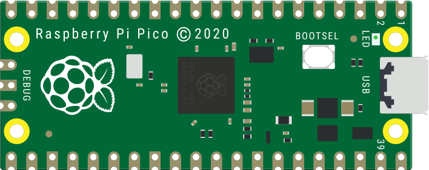
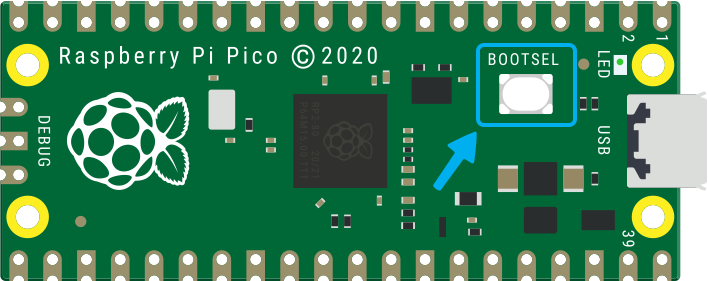
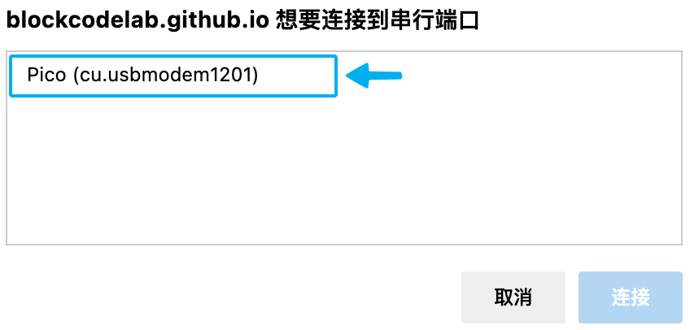

树莓派 Pico
树莓派 Pico 系列是一系列微型、快速和多功能的电路板，使用 RP2040 芯片构建，RP2040 芯片是由树莓派在英国设计的旗舰微控制器芯片。
认识树莓派 Pico
详细查看树莓派 Pico 产品页，购买地址：淘宝链接。

树莓派 Pico 扩展
树莓派 Pico 扩展是基于 Scratch 3.0 开发的扩展模块，可以让 Scratch 3.0 具备对树莓派 Pico 开发板进行开发的功能。
使用扩展对树莓派 Pico 开发板进行实时编程或离线编程（暂未开放），在实时编程时可以及时看到运行效果并能与电脑进行交互；实时编程完成后直接下载到树莓派 Pico 开发板中就可以离线运行，离线运行可以不用连接电脑，但也失去了与电脑的交互能力。
固件
要求树莓派 Pico 开发板下载最新 Kaluma 固件（kaluma-rp2-pico-1.1.0-beta.2.uf2）。
拖放安装固件
下载好固件后，将树莓派 Pico 开发板准备好（不要连接电脑 USB 接口），然后按下面的步骤安装固件：
- 按住树莓派 Pico 开发板背面的 BOOTSEL 按钮，然后将树莓派 Pico 开发板插入 PC 的 USB 接口，然后松开 BOOTSEL 按钮。
- 树莓派 Pico 开发板会被识别为大容量存储设备。
- 将下载的固件文件（UF2 文件）放入 RPI-RP2 卷上。
- 树莓派 Pico 开发板将自动重启，然后就开始编程了。

接下来就可以使用树莓派 Pico 扩展对树莓派 Pico 开发板进行编程了。
连接树莓派 Pico
| 点击感叹号开始连接 | 选择树莓派 Pico 开发板 |
|---|---|
 |
 |
现在开始享受愉快的编程吧！
编程
引脚